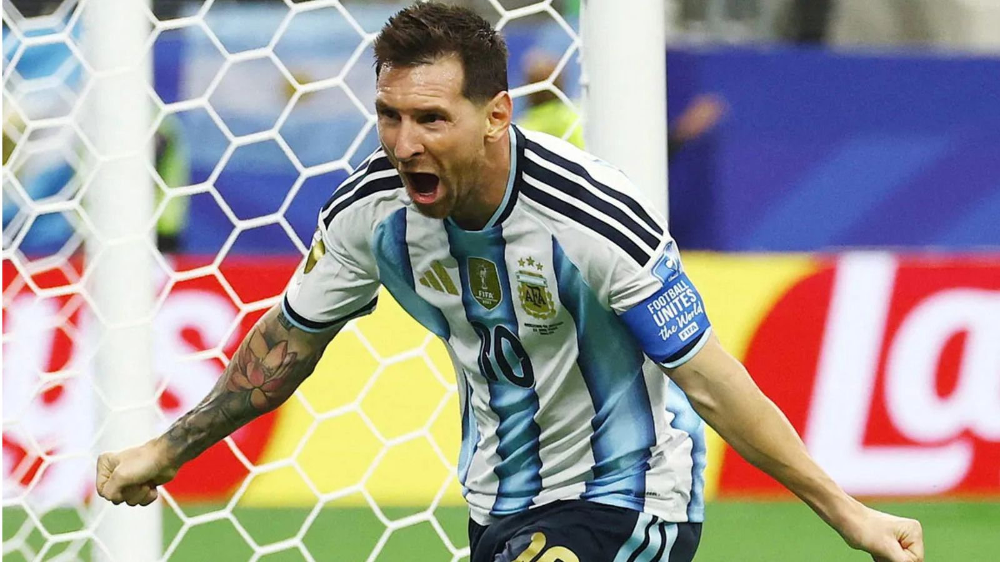

Apuntes sobre Lionel Messi: los números que se pueden contar y los gestos que casi nadie contó.

No confío mucho en los rankings. Reducen una vida entera a una casilla y una flecha: arriba o abajo. Pero hoy es 24 de junio de 2026. Lionel Messi cumple 39 años en plena Copa del Mundo, dos días después de convertirse —sin distinción de género— en el máximo goleador en la historia de los Mundiales: superó a Miroslav Klose y a Marta Vieira da Silva, la delantera brasileña que hasta entonces tenía ese récord absoluto. El mundo, una vez más, se hace la misma pregunta: ¿es el mejor deportista que haya existido?
Quien haya estado en una calle argentina la tarde del 18 de diciembre de 2022 sabe que esa pregunta, en este país, no es del todo justa. Aquel título no fue solo una copa: fueron treinta y seis años de espera convertidos, durante una tarde, en la postal más feliz que mucha gente recuerde. Abuelos que vieron perder tres finales se la cruzaron de generación, en vivo, a nietos que todavía no sabían bien por qué llorar. Eso no entra en ningún ranking, pero conviene tenerlo presente antes de hablar de números.
No voy a responder la pregunta rápido. Las cosas que importan no se responden rápido: se examinan, dato por dato, gesto por gesto, hasta donde alcance la evidencia. Eso es lo que sigue: los números a la vista, los defectos a la vista, y algunas cosas que Messi hizo sin pedirle permiso a una cámara.
Hay una parte de cualquier grandeza que se puede medir con precisión: lo que se ganó, lo que se anotó, lo que quedó registrado en un papel oficial. Empecemos por ahí, porque ignorar los números sería tan deshonesto como quedarse solo con ellos.
Pongamos, al lado, a quienes siempre aparecen en esta discusión. No para que pierdan: para entender que compiten bajo reglas distintas, y que comparar a un nadador con un futbolista es, en rigor, comparar dos lenguajes distintos de la excelencia.
28 medallas olímpicas, 23 de oro. El medallero más grande de la historia de los Juegos, en cualquier disciplina.
6 anillos de la NBA, 6 veces MVP de las Finales. Ganó cada final que jugó completa.
3 Copas del Mundo. Sigue siendo el único futbolista con esa cifra.
3 veces campeón mundial de los pesados. Convirtió el ring en tribuna política, algo que ningún otro nombre de esta lista hizo con ese costo personal.
23 títulos de Grand Slam. Redefinió la potencia, la presencia y la permanencia en el tenis femenino.
Récords vigentes en 100 m (9.58s) y 200 m (19.19s). 8 oros olímpicos. Nadie corrió más rápido jamás.
Hay una casualidad de calendario que vale la pena contar. Hoy, mientras Messi cumple 39, se cumplen también 115 años del nacimiento de Juan Manuel Fangio, el primer argentino en ser, sin discusión posible, el mejor del mundo en lo suyo. Entre uno y otro hubo más nombres. Conviene presentarlos — no para repartir medallas entre compatriotas, sino para entender que la grandeza de Messi no nació de la nada: nació en un país que ya sabía, mucho antes que él, cómo se hace esto.
5 campeonatos mundiales de Fórmula 1 con 4 escuderías distintas. Ganó el 47% de las carreras que disputó, un porcentaje que sigue siendo récord. Su marca de títulos aguantó 46 años, hasta que Schumacher la igualó en 2003.
Dominó subido a autos de otros, como Messi dominó vistiendo camisetas de otros: Barcelona, París, Miami, la Selección. El talento, cuando es de ese tamaño, no depende del vehículo.
Capitán y figura excluyente del único título mundial argentino antes de 2022. El gol a Inglaterra en México 86 fue votado por la FIFA como el mejor de la historia. También cargó dos sanciones por dopaje y una adicción que lo acompañó hasta su muerte en 2020.
Es la comparación más citada y la más fácil de hacer mal. Maradona fue el genio caótico que llevó a un equipo entero sobre los hombros; Messi es la versión disciplinada y longeva de esa misma genialidad. Ninguno sustituye al otro.
4 anillos de la NBA con San Antonio Spurs, oro olímpico en Atenas 2004 derrotando a Estados Unidos en semifinales —MVP del torneo— y, en 2022, el primer argentino en el Salón de la Fama. Solo un puñado de jugadores en la historia mundial reúne ese combo.
Fue, durante años, "sexto hombre" por decisión propia antes que por imposición: el que entraba desde el banco a resolver lo que los titulares no podían. Una humildad funcional que Messi, a su manera, también terminó adoptando dentro del vestuario.
Primera argentina en ganar un Grand Slam individual (US Open 1990, venciendo a Steffi Graf). Medalla de plata en Seúl 1988 siendo abanderada a los 18 años. Llegó a ser N.º 3 del mundo, con 27 títulos.
Abrió, en un país obsesionado con el fútbol, un lugar para otro deporte y para las mujeres en la élite. Como Messi, evitaba las entrevistas que no quería dar; como él, terminó su carrera ligada a UNICEF.
Ninguno de estos cuatro nombres necesita a Messi para justificar su lugar en la historia. Pero a Messi le sirve estar parado sobre estos hombros: nació en un país que, mucho antes de que él pisara una cancha, ya sabía que se podía ser el mejor del mundo en algo. Eso no se entrena. Se hereda.
Ninguna estadística dice cómo reacciona alguien bajo presión, ni qué hace cuando gana, ni qué hace cuando pierde. Eso se aprende con el tiempo, no con un anuncio. Con las personas pasa así: el carácter se nota en lo que se repite, no en lo que se promete.
Messi habla poco. En más de veinte años de carrera profesional no hay un escándalo de vestuario armado, una entrevista incendiaria, una polémica que él mismo haya encendido. Mantiene, casi intacto, el círculo de la infancia: Antonela Roccuzzo, su pareja desde que ambos eran chicos en el mismo barrio de Rosario; sus tres hijos; los amigos de siempre. La fama, en su caso, no le cambió el domicilio emocional.
En el Mundial de 2022 algo se movió en su rol dentro del equipo: dejó de ser solamente el mejor jugador para convertirse, también, en la voz del vestuario — discutió con rivales cuando hubo que discutir, defendió en público a los más jóvenes del plantel, sostuvo conferencias de prensa enteras cuando el equipo lo necesitaba. No fue siempre así: en mundiales anteriores se lo había señalado, justamente, por callado. Aprendió, ya pasados los 35 años, un oficio nuevo: el de liderar en voz alta cuando todo en su currículum pedía silencio.
Sigue disputando los noventa minutos a los 39 años, en una liga que podría haber elegido simplemente para retirarse caminando, y en cambio entrena doble turno con su amigo y compañero Rodrigo De Paul para llegar entero a una Copa del Mundo más.
Comparado con otras leyendas, su manera de ejercer la grandeza es distinta — y conviene decirlo sin jerarquía, porque no hay una forma mejor o peor de hacerlo, hay formas distintas. Ali necesitó el megáfono y la confrontación pública para cambiar su deporte y a su país. Jordan necesitó una competitividad casi feroz para encontrar su propio límite. Maradona necesitó el caos para ser genio. Messi no necesitó nada de eso. Y quizás por eso su grandeza sea más difícil de noticiar: no vende tanto una foto de alguien que no grita.
Esto no es una lista de buenas obras para quedar bien. Es, literalmente, lo que se pudo encontrar después de buscar más allá del comunicado oficial — la parte de la fundación que no necesitó vocero.
Mucho antes de ganar un Mundial, financió en secreto el tratamiento hormonal de Waleed Kashash, un chico sirio con la misma condición de crecimiento que él tuvo de niño: 208 euros cada quince días, durante años. No hubo comunicado de la fundación. Se supo porque lo contó la familia del chico, no porque lo anunciara Messi.
Su fundación construyó 14 centros de salud en comunidades rurales nepalíes, lejos de cualquier estadio y de cualquier cámara de televisión.
Financió el acceso a agua potable en comunidades aborígenes de Argentina. No hay foto de Messi cortando una cinta. Solo hay una cañería que antes no estaba.
Donó una silla de ruedas motorizada a un vecino de Rosario. El único registro público de ese gesto es un agradecimiento local — no un posteo, no una nota.
Reconstruyó y equipó por completo un hogar convivencial para chicos en situación de calle.
Entregó 50.630 kits educativos a niños y niñas desplazados por la guerra. La lógica, dijo su fundación, fue simple: a él la educación también le costó cara, y no por dinero.
Donó al Hospital Clínic de Barcelona y, después, 500.000 euros a la Fundación Garrahan que terminaron repartidos en silencio entre seis hospitales públicos argentinos: respiradores, monitores, bombas de infusión. La mayoría de esos hospitales nunca llegó a un titular.
Es embajador de UNICEF desde 2010. Todavía no había ganado un Mundial. Lo hizo antes de necesitarlo para la foto.
Pero ser objetivo también significa lo que sigue.
Ser objetivo no es elegir un lado y defenderlo bien. Es no esconder lo que incomoda, aunque el resto del cuadro sea casi impecable.
La Audiencia de Barcelona, y luego el Tribunal Supremo de España, condenaron a Messi y a su padre por tres delitos fiscales: usaron una red de sociedades en Reino Unido, Suiza, Belice y Uruguay para eludir impuestos sobre 4,1 millones de euros provenientes de sus derechos de imagen entre 2007 y 2009. La pena fue de 21 meses de prisión —suspendida, como es habitual en España para condenas menores a dos años sin antecedentes— y una multa de 2 millones de euros. Devolvió el dinero defraudado antes del juicio. No es un detalle menor ni un saldo emocional: es una condena penal confirmada por el máximo tribunal de un país, y un ensayo objetivo tiene que decirlo con la misma claridad con la que cuenta los goles.
También vale la pena decir que comparar a Messi con Phelps, con Bolt o con Ali es, en rigor, comparar dos sistemas de medida distintos: cada deporte mide la grandeza con su propia vara, con calendarios, formatos y niveles de exposición mediática que no son equivalentes entre sí. Cualquiera que diga tener la respuesta definitiva a «quién es el mejor deportista de la historia» está, casi siempre, dándote su gusto personal disfrazado de certeza matemática.
¿Es Messi el mejor deportista de la historia? No lo sé, y desconfío de cualquiera que te lo diga sin matices. Comparar disciplinas, épocas y formatos distintos es, en el fondo, un ejercicio de gusto personal con vocabulario de tabla estadística.
Lo que sí puedo decirte es esto: pocas personas llegan a los 39 años, en la cima absoluta de su oficio, sin haber cambiado de pareja, de amigos ni de barrio. Pocas fundaciones eligen el centro de salud sin cámaras antes que el evento con alfombra roja. Y pocos atletas, a esta altura del partido, todavía corren los noventa minutos enteros un martes cualquiera de mayo, sin que nadie se los esté pidiendo.
Hoy cumple 39. Sigue jugando. Sigue siendo, según cuenta su gente y no su prensa, la misma persona que era antes del primer Balón de Oro. Eso no entra en ninguna tabla comparativa.
Y hay algo más, que no es un dato pero tampoco es poca cosa: en algún rincón de una cancha, esta misma tarde, hay padres señalándole la pantalla a sus hijos de la misma manera en que alguna vez sus propios padres les señalaron a Maradona. Ese gesto —mirá, esto no lo vas a volver a ver igual— se repite ahora con un nombre distinto, en el mismo país. Si alguna vez te preguntás cómo se construye una leyenda que dure, probablemente sea así: en silencio, gesto por gesto, durante veinte años, cuando nadie estaba mirando, hasta que un día alguien te agarra del hombro y te dice mirá, prestá atención a este.